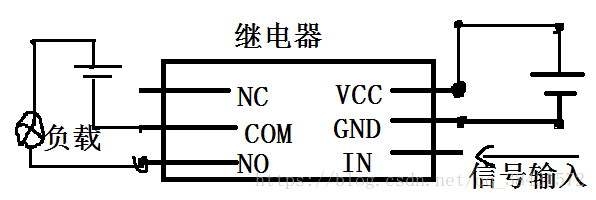

原文出处:本文由博客园博主sogeisetsu提供。
原文连接:https://www.cnblogs.com/sogeisetsu/p/11312864.html
原文连接:https://www.cnblogs.com/sogeisetsu/p/11312864.html

关于传感器的一些说明
我的想法是这样的
我尽量用易于理解的语言去说我的想法
首先，土壤湿度传感器和dh11会获取数据，然后树莓派会处理这些数据，读出土壤温湿度和空气温湿度，并将这些数据上传到云服务器，
云服务器会将这些数据显示在网页上，同时树莓派会根据这些数据来决定是否控制继电器进而控制水泵来浇水，当然，水泵是否浇水也可以通过事先做的网页看到。
接下来我将分别介绍这几个传感器和水泵
- 首先是dh11
- 先放上控制dh11的代码（通过python2来运行）
# coding=UTF-8
#!/usr/bin/python
import RPi.GPIO as GPIO
import time
channel = 16 #引脚号16
data = [] #温湿度值
j = 0 #计数器
a=20
GPIO.setmode(GPIO.BCM) #以BCM编码格式
time.sleep(1) #时延一秒
GPIO.setup(channel, GPIO.OUT)
GPIO.output(channel, GPIO.LOW)
time.sleep(0.02) #给信号提示传感器开始工作
GPIO.output(channel, GPIO.HIGH)
GPIO.setup(channel, GPIO.IN)
while GPIO.input(channel) == GPIO.LOW:
continue
while GPIO.input(channel) == GPIO.HIGH:
continue
while j < 40:
k = 0
while GPIO.input(channel) == GPIO.LOW:
continue
while GPIO.input(channel) == GPIO.HIGH:
k += 1
if k > 100:
break
if k < 8:
data.append(0)
else:
data.append(1)
j += 1
print "温度传感器正在工作.以下是二进制数据"
print data #输出初始数据高低电平
humidity_bit = data[0:8] #分组
humidity_point_bit = data[8:16]
temperature_bit = data[16:24]
temperature_point_bit = data[24:32]
check_bit = data[32:40]
humidity = 0
humidity_point = 0
temperature = 0
temperature_point = 0
check = 0
for i in range(8):
humidity += humidity_bit[i] * 2 ** (7 - i) #转换成十进制数据
humidity_point += humidity_point_bit[i] * 2 ** (7 - i)
temperature += temperature_bit[i] * 2 ** (7 - i)
temperature_point += temperature_point_bit[i] * 2 ** (7 - i)
check += check_bit[i] * 2 ** (7 - i)
tmp = humidity + humidity_point + temperature + temperature_point #十进制的数据相加
if check == tmp: #数据校验，相等则输出
print "temperature : ", temperature, ", humidity : " , humidity
if temperature>=20 :
print"123"
else: #错误输出错误信息，和校验数据
print "信息错误，将输出校验数据"
print "temperature : ", temperature, ", humidity : " , humidity, " check : ", check, " tmp : ", tmp
GPIO.cleanup() - continue
- 这是dh11的图片
[外链图片转存失败(img-OBzvo0bn-1564499500950)(https://raw.githubusercontent.com/sogeisetsu/shumeipai/master/photos%20of%20dh11%20(2)].jpg)
- 这是dh11的图片
- continue
- dh11是用来获取空气湿度和温度数据的
- DHT11有三个IO接口，一个VCC（正极）接3.3v，一个GND接GND，剩下一个DATA接树莓派的任意一个GPIO
- 原理推荐阅读这个简书
- 土壤湿度传感器
- 这是控制土壤湿度传感器的代码
#!/usr/bin/python
# -*- coding: UTF-8 -*-
import RPi.GPIO as GPIO
import time
channel = 21 #管脚40，参阅树莓派引脚图，物理引脚40对应的BCM编码为21
GPIO.setmode(GPIO.BCM)
GPIO.setup(channel, GPIO.IN)
while True:
if GPIO.input(channel) == GPIO.LOW:
print "土壤检测结果：潮湿"
else:
print "土壤检测结果：干燥"
time.sleep(1)
- continue
- 这是土壤湿度传感器的图片
[外链图片转存失败(img-YCWTTVQJ-1564499500952)(https://raw.githubusercontent.com/sogeisetsu/shumeipai/master/%E5%9C%9F%E5%A3%A4%E6%B9%BF%E5%BA%A6%E4%BC%A0%E6%84%9F%E5%99%A8.jpg)]
- 这是土壤湿度传感器的图片
- continue
- YL-69有模拟输出（AO口）和数字输出（DO口），由于树莓派的GPIO只支持数字输入，所以AO口悬空。将VCC连接物理接口2，GND引脚连接物理接口14，DO引脚连接物理接口，接好线以后，电源灯（红灯）会亮起，调节传感器上的阈值旋钮，使得在空气中绿灯不亮。此时将传感器触角伸入水中，可以看到绿灯亮起。
- 当然这些接口比如vcc gnd 接别的也行
- 土壤传感器的原理看这里原理
- 继电器和水泵
- 控制继电器和水泵的代码是这样的
{kind=link}
import RPi.GPIO as GPIO
import time
print("PC ON: PC-ON")
print("Exit: Q and q")
while True:
user_choice=input("Choice:")
if user_choice=="PC-ON":
GPIO.setmode(GPIO.BCM)
GPIO.setup(25,GPIO.OUT)
GPIO.output(25,GPIO.LOW)
print("3")
time.sleep(1.0)
print("2")
time.sleep(1.0)
print("1")
time.sleep(1.0)
GPIO.cleanup()
elif user_choice=="q" or user_choice=="Q":
GPIO.cleanup()
这里需要注意一个问题，控制继电器时不可以像普通单片机那样用高低电平来控制继电器，不能用高低电平的原因是电流过大，不管是低电平还是高电平都会是通路，当然，如果接一个合适的电阻就会解决这个问题。我这里没有接合适的电阻而是采用设置和释放gpio的方法。
- continue
- 这里放继电器和水泵的照片
[外链图片转存失败(img-EdhZdOLv-1564499500953)(https://raw.githubusercontent.com/sogeisetsu/shumeipai/master/%E7%BB%A7%E7%94%B5%E5%99%A8%E6%B0%B4%E6%B3%B5%E7%94%B5%E6%B1%A0%E7%9B%92.jpg)]
- 这里放继电器和水泵的照片
- continue
- 继电器VCC就是电源正极，GND就是电源负极，IN是通断信号的输入引脚。NC即常闭端（normal close），COM即公共端，NO即常开端。继电器一端连上正负极和IN，另一端电池盒和水泵和继电器相连。
{kind=link}

- continue
- 接NO端的目的是让它在未通电的情况下保持常开。
文章来源于sogeisetsu的GitHub。 如果喜欢欢迎fork和star树莓派云灌溉系统设计
- 接NO端的目的是让它在未通电的情况下保持常开。